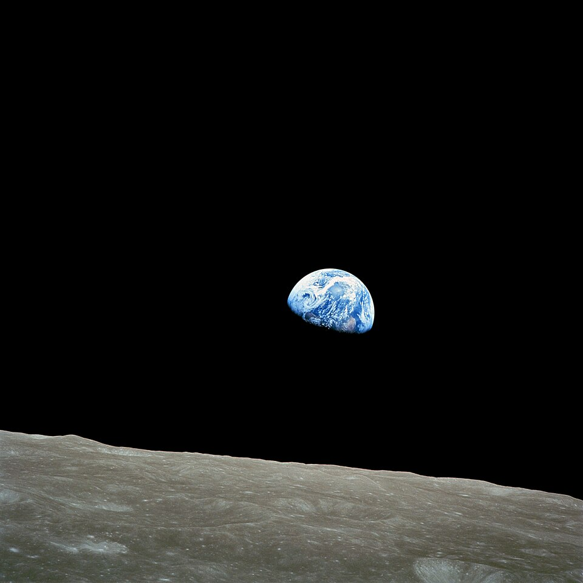
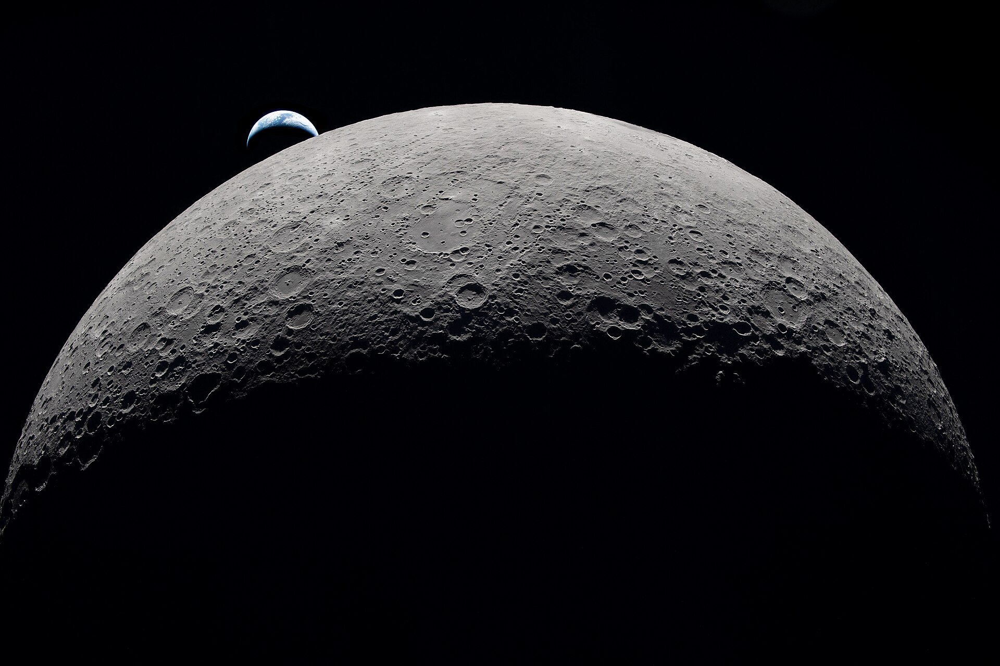

Hace ya medio año desde el despegue de la misión Artemis 2, que fue el primer regreso a la Luna desde Apollo 17, en 1972. Esta misión, que consiste en una trayectoria libre alrededor de la Luna (Es decir, que si hubiera habido algún problema durante el tránsito a la luna, la trayectoria de la nave les hubiera devuelto a la Tierra sin problema.) duró más de 9 días, además batió el récord de la mayor distancia a la que los humanos han estado de la Tierra.

